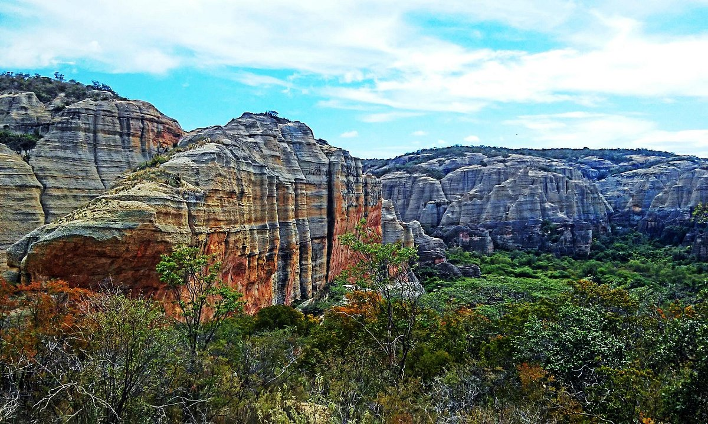

📍 Localização e História
O Piauí está localizado na região Nordeste do Brasil e faz fronteira com o Maranhão, Ceará, Pernambuco, Bahia e o Oceano Atlântico. Sua capital é Teresina, a única capital nordestina que não está no litoral, mas sim às margens dos rios Parnaíba e Poti. O estado é conhecido por seu papel importante na história pré-histórica do Brasil, abrigando sítios arqueológicos únicos no continente.

🏞️ Pontos Turísticos
O Piauí abriga lugares incríveis como o Parque Nacional da Serra da Capivara, reconhecido pela UNESCO como Patrimônio Mundial da Humanidade. O parque guarda as pinturas rupestres mais antigas das Américas, datadas de mais de 25 mil anos. Outro destaque é o Delta do Parnaíba, um espetáculo natural formado por ilhas, dunas e lagoas, sendo um dos únicos deltas em mar aberto do mundo.
🎭 Cultura e Tradições
A cultura piauiense é marcada por tradições sertanejas e festas populares, como o Festival de Inverno de Pedro II e o Encontro Nacional de Folguedos. A culinária tem pratos típicos deliciosos, como a panelada, o capote (galinha-d’angola) e o famoso arroz de Maria Izabel.
🌿 Natureza e Economia
O Piauí possui uma grande diversidade natural, com áreas de cerrado, caatinga e litoral. Sua economia é baseada na agricultura, pecuária, energia e turismo ecológico. O estado também tem investido fortemente na geração de energia solar e eólica, aproveitando seu clima ensolarado e ventos constantes.
⬅ Voltar